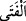
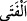
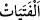

Ey gönlü diri olan, benden bir nükte dinle,
Sonra ölümü hayırla yâd et
Bazen lütuf ve ihsanla özgür birini köle et,
Bazen de iyilikle bir köleyi âzâd et
Bir hadiste şöyle buyrulmuştur: “Üç kimseye yardım etmek Allah üzerinde bir haktır:
Borcunu ödemek isteyen mükâteb, iffetli olmak isteyerek evlenen kimse ve Allah
yolunda cihâd eden kimse.”[165] Taksidleri bitmeden ölen mükâteb köle hakkında ihtilâf
edilmiştir. İmam Ebû Hanîfe ve Mâlik’e göre bu halde ölen köle, kalan taksidleri
terekesinden ödenmek şartıyla hür olur. Borcu ödendikten sonra artan mal ise hür
çocukları tarafından paylaşılır. İmam Şâfiî ve Ahmed b. Hanbel’e göre bu kişi köle
olarak ölür ve satılan eşyâ müşterinin eline geçmeden telef olunca alış-veriş ortadan
kalktığı gibi ister köle geride mal bıraksın ister bırakmasın ölünce hürriyetine dâir
efendisiyle yaptığı anlaşma ortadan kalkar.
“Dünya hayâtının geçici menfaatlerini elde edeceksiniz diye namuslu kalmak”
iffetli olmak, kale gibi iffetin içine kendilerini koymak “isteyen câriyelerinizi fuhşa”
zinâya “zorlamayın” Çünkü genellikle zinâ, yaşlı veya çocuklardan değil, olgunluk
yaşına ulaşmış gençlerden sâdır olur.
“ ve “ köle ve câriye hakkında kullanılan meşhur kinâyelerdir. “ taze,
genç kişi demektir. Zinâ daha çok gençlerden sâdır olduğu için “ kelimesinin konu
ile münâsebeti daha fazladır. Çünkü çoğunluk bu, onların dışındaki yaşlılardan ve
küçüklerden değil, onlardan beklenir.
İkrah (zorlama), ancak nefsin veya bir uzvun yok olmasını gerektiren bir korkutma ile
hâsıl olur. Yoksa az bir korkutma ile kişi mükreh, yâni zorlanmış sayılmaz.
Âyette geçen “namuslu kalmak isteyen” ifâdesi, câriyeleri fuhşa zorlama yasağını
onların zinâdan uzak kalmayı istemeleri durumuna tahsis etmek ve onun dışındakileri bu
hükümden çıkarmak için değildir. Bilakis onların devam edegelen âdetlerini tescil
etmek için bu ifâde kullanılmıştır. Çünkü onlar câriyelerini namuslu kalmak istedikleri
halde zinâya zorluyorlardı. Abdullah b. Übeyy’in altı tane güzel câriyesi vardı. Onları
zinâya zorlardı. Nihâyet onlardan her birine belli bir ücret getirmesini şart koştu. Bunun
üzerine Muâze ve Müseyke adında iki câriyesi Rasûlullah (s.a.)’e gelerek şikâyette
bulundular. İşte bunun üzerine bu âyet nâzil oldu.
Âyet-i kerime, namuslu kalmak isteyen câriyelerini fuhşa zorlayan kimselerin hâllerini
kötülemekte ve onları ayıplamaktadır. Çünkü kendisinde zerre kadar mürüvvet bulunan
bir kimse sâhip olduğu câriyesine fuhşu emretmediği ve onu fuhşa zorlamadığı gibi onun
kendiliğinden bir kötülük yapmasına dahi razı olamaz. Özellikle de câriye namuslu
kalmak isteyince.
Âyet-i kerimede, sözün gelişinden câriyelerin kesin olarak namuslu kalma isteğinde
oldukları anlaşıldığı halde “namuslu kalmak istediklerinde” değil de “şâyet namuslu